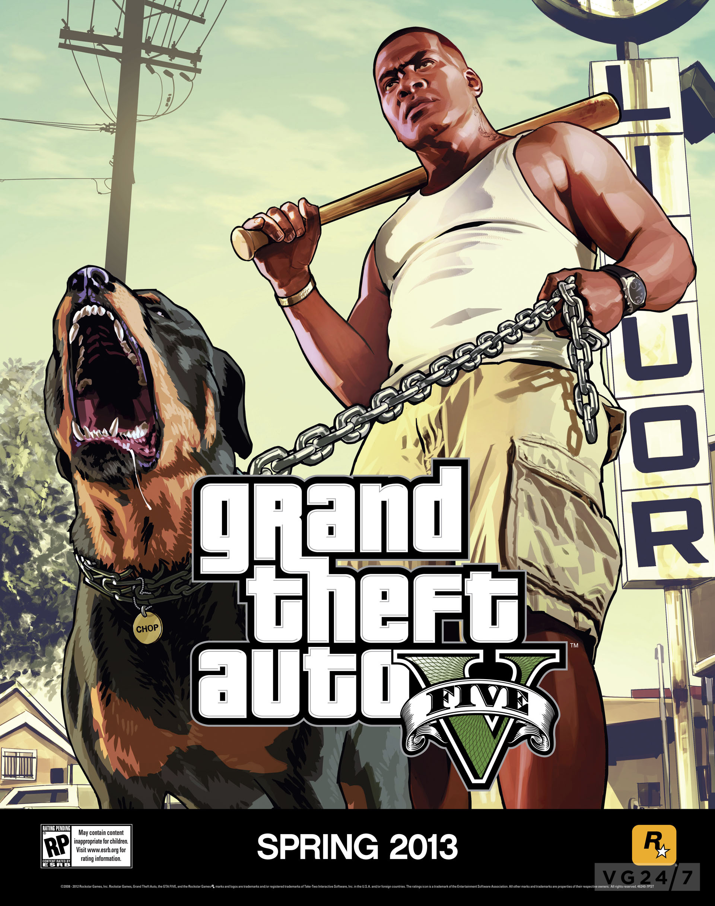
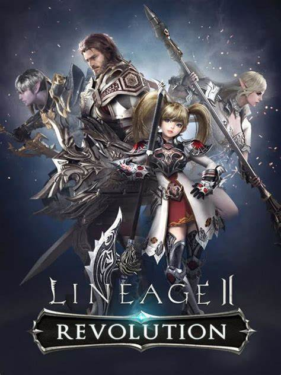

Grand Theft Auto V
postado 05 em março 2022 Grand Theft Auto V é um jogo eletrônico de ação-aventura desenvolvido pela Rockstar North e publicado pela Rockstar Games. É o sétimo título principal da série Grand Theft Auto e foi lançado originalmente em 17 de setembro de 2013 para PlayStation 3 e Xbox 360, com remasterizações lançadas em 2014 para PlayStation 4 e Xbox One, em 2015 para Microsoft Windows e em 2022 para PlayStation 5 e Xbox Series X/S. O jogo se passa no estado ficcional de San Andreas, com a história da campanha um jogador seguindo três criminosos e seus esforços para realizarem assaltos sob a pressão de uma agência governamental. O mundo aberto permite que os jogadores naveguem livremente pelas áreas rurais e urbanas de San Andreas.
Leia maisRed Dead Redemption
postado 05 em março 2022
Red Dead Redemption é um jogo eletrônico de ação aventura desenvolvido pela Rockstar San Diego e publicado pela Rockstar Games. Ele foi lançado em maio de 2010 para PlayStation 3 e Xbox 360, sendo um sucessor espiritual de Red Dead Revolver lançado em 2004. O jogo se passa em 1911 durante o declínio do Velho Oeste e segue a história de John Marston, um antigo fora-da-lei que tem sua esposa e filho tomados como reféns pelo governo para forçá-lo a trabalhar como seu caçador contratado. Sem escolhas, Marston parte em uma jornada para levar três membros de sua antiga gangue até a justiça.
Leia maisLineage II
postado 05 em março 2022 Lineage II é um jogo totalmente 3D, no estilo MMORPG (Massively Multiplayer Online Role Playing Game), ou seja, um RPG jogado por muitas pessoas via a rede mundial de computadores, a internet. O ambiente em que se passa as batalhas foi criado puramente baseado na mitologia nórdica, onde se passam a criação e a formação do globo terrestre, de acordo com a vontade dos deuses. Existem influências puras do RPG Medieval, e de temas abordados em O Senhor dos Anéis, do escritor J.R.R. Tolkien. A história do jogo inicia-se com a criação do mundo e a criação das raças, que são cinco: Humanos, Elfos, Elfos Negros os conhecidos Drows, Anões e Orcs.
Leia mais